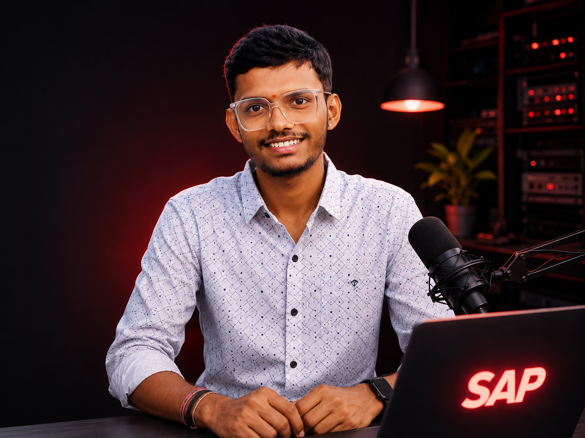

I keep SAP systems stable, secure & always available.
SAP Basis professional with hands-on enterprise operations experience across monitoring, troubleshooting, transport management, system maintenance and technical administration.

Play my short introduction and explore my SAP journey.
Behind the systems.
Focused on stability.
Who I Am
An SAP Basis Administrator focused on reliable enterprise operations, structured troubleshooting and business continuity.
What I Do
I monitor SAP landscapes, investigate technical issues, support maintenance, transports, certificates, jobs and system availability.
My Goal
To grow into a deeply technical SAP professional who understands both Basis operations and what happens behind the scenes.
My SAP Basis skillset.
System Operations
SAP Administration
Tools & Platforms
Solution Manager · SAP MMC · HANA · ChaRM · AL11 · ST22 · SM21 · SM37 · SM58 · SM59 · ST06 · DB02 · SP01 · Redwood · Control-M
Problems I work on.
BOBJ Service Recovery
Operational recovery workflow during a BOBJ availability incident.
- Validated service impact
- Stopped Tomcat
- Cleared cache as required
- Supported AIX restart
- Started Tomcat and validated services
Long-Running Job Analysis
Investigating background jobs and coordinating action based on operational thresholds and approvals.
RFC & tRFC Failure Checks
Using SM59 and SM58 to identify connectivity or transactional RFC failures and support escalation with technical evidence.
Transport Operations
Supporting ChaRM and transport movement through controlled SAP landscapes with testing and production coordination.
Certificate Renewal
Supporting SAP certificate renewal activities and post-change validation to maintain secure system connectivity.
System Health Monitoring
Daily checks across dumps, system logs, jobs, locks, updates, RFCs, database and operating system health.
Education & growth.
Secondary Education — CBSE
Completed my secondary education and developed a strong foundation for my academic and technical journey.
Intermediate — MPC
Completed Intermediate in Mathematics, Physics and Chemistry, strengthening my analytical and problem-solving skills.
HCLTech TechBee Program
Joined the HCLTech TechBee early career program after Intermediate and began my professional journey in the IT industry.
HCLTech — SAP Technical Operations
Started my enterprise technology career at HCLTech and gained hands-on exposure to SAP technical operations and production support environments.
Bachelor of Computer Applications — SASTRA University
Pursued my Bachelor of Computer Applications while continuing my professional career, strengthening my knowledge of computer applications and software concepts.
SAP Basis — Enterprise Operations
Building hands-on expertise in SAP Basis administration, system monitoring, troubleshooting, maintenance, transport management and enterprise SAP operations.
Looking for an SAP Basis professional?
I'm interested in opportunities where I can contribute to SAP operations, deepen my technical expertise and solve real enterprise system challenges.
Get in Touch →